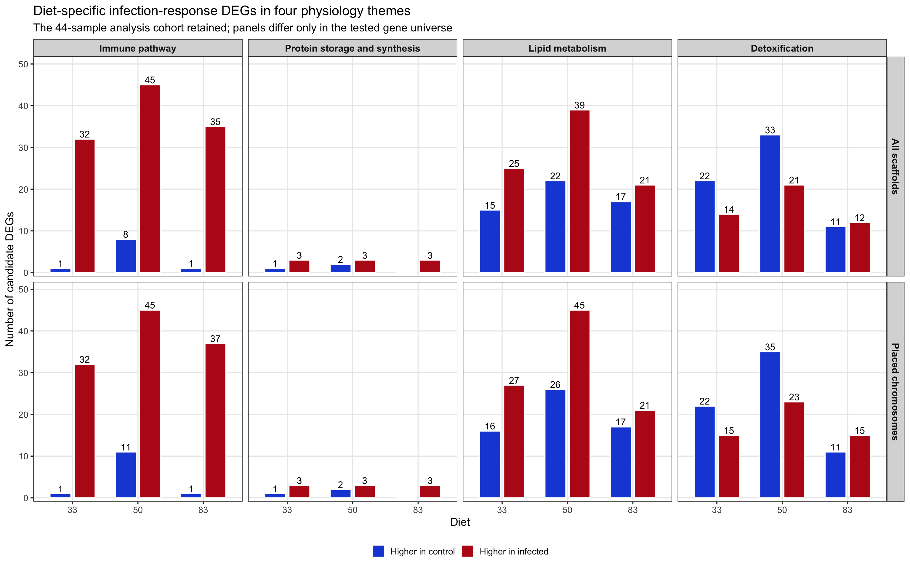
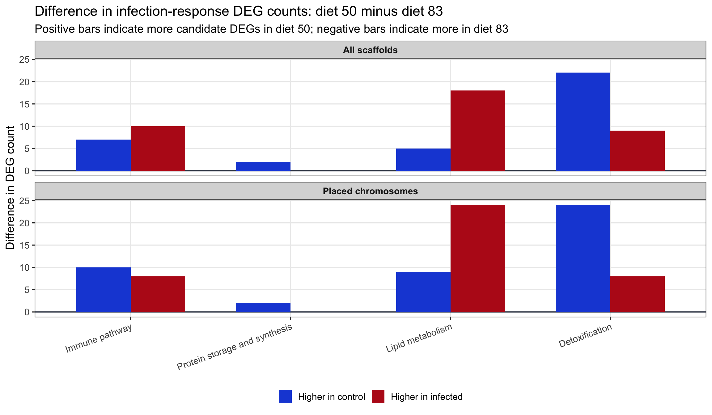

Last updated: 2026-08-09
Checks: 6 1
Knit directory:
gregaria-diet-infection-interaction/
This reproducible R Markdown analysis was created with workflowr (version 1.7.2). The Checks tab describes the reproducibility checks that were applied when the results were created. The Past versions tab lists the development history.
The R Markdown file has unstaged changes. To know which version of
the R Markdown file created these results, you’ll want to first commit
it to the Git repo. If you’re still working on the analysis, you can
ignore this warning. When you’re finished, you can run
wflow_publish to commit the R Markdown file and build the
HTML.
Great job! The global environment was empty. Objects defined in the global environment can affect the analysis in your R Markdown file in unknown ways. For reproduciblity it’s best to always run the code in an empty environment.
The command set.seed(20260427) was run prior to running
the code in the R Markdown file. Setting a seed ensures that any results
that rely on randomness, e.g. subsampling or permutations, are
reproducible.
Great job! Recording the operating system, R version, and package versions is critical for reproducibility.
Nice! There were no cached chunks for this analysis, so you can be confident that you successfully produced the results during this run.
Great job! Using relative paths to the files within your workflowr project makes it easier to run your code on other machines.
Great! You are using Git for version control. Tracking code development and connecting the code version to the results is critical for reproducibility.
The results in this page were generated with repository version 8b8101c. See the Past versions tab to see a history of the changes made to the R Markdown and HTML files.
Note that you need to be careful to ensure that all relevant files for
the analysis have been committed to Git prior to generating the results
(you can use wflow_publish or
wflow_git_commit). workflowr only checks the R Markdown
file, but you know if there are other scripts or data files that it
depends on. Below is the status of the Git repository when the results
were generated:
Ignored files:
Ignored: .DS_Store
Ignored: analysis/output/
Ignored: code/R_timecourse_reference/
Ignored: code/scripts/__pycache__/
Ignored: data/.DS_Store
Ignored: data/raw_read_counts/DESeq2_output/overlap_DEGs/
Ignored: data/reference/
Ignored: output/.DS_Store
Ignored: output/archive/rmd_runs_20260809_navigation_cleanup/curated-target-gene-figure_20260808-001351/
Ignored: output/rmd_runs/
Ignored: output/runs/
Ignored: outputs/.DS_Store
Ignored: scripts/.RData
Ignored: scripts/.Rhistory
Ignored: scripts/manuscript/__pycache__/
Untracked files:
Untracked: code/config/fatbody_dual_rnaseq_samples_analysis_44_excluding_1044.tsv
Untracked: data/metadata/analysis_cohort_exclusion_audit_20260809.tsv
Untracked: data/metadata/mehreen_metadata_analysis_44_excluding_1044.txt
Untracked: output/archive/rmd_runs_20260809_navigation_cleanup/exon-only-deseq2-analysis_20260808-020715/placed_unplaced_all_deseq2_results.csv
Untracked: output/archive/rmd_runs_20260809_navigation_cleanup/exon-only-deseq2-analysis_20260808-022116/placed_unplaced_all_deseq2_results.csv
Untracked: output/archive/rmd_runs_20260809_navigation_cleanup/placed-unplaced-scaffold-analysis_20260806-010555/placed_unplaced_all_deseq2_results.csv
Unstaged changes:
Modified: analysis/01-study-design-data.Rmd
Modified: analysis/02-workflow-reproducibility.Rmd
Modified: analysis/03-count-qc-exploration.Rmd
Modified: analysis/04-deseq2-interaction-model.Rmd
Modified: analysis/05-diet-pairwise-deg.Rmd
Modified: analysis/06-infection-within-diet-deg.Rmd
Modified: analysis/07-deg-overlap-prioritization.Rmd
Modified: analysis/08-publication-figures.Rmd
Modified: analysis/11-outlier-sensitivity.Rmd
Modified: analysis/13-physiology-candidate-genes.Rmd
Modified: analysis/14-all-samples-deseq2-interaction-model.Rmd
Modified: analysis/15-all-samples-diet-pairwise-deg.Rmd
Modified: analysis/16-all-samples-infection-within-diet-deg.Rmd
Modified: analysis/25-enrichment-term-gene-index.Rmd
Modified: analysis/26-circled-cluster-enrichment.Rmd
Modified: analysis/28-placed-unplaced-scaffold-analysis.Rmd
Modified: analysis/29-metarhizium-read-burden.Rmd
Modified: analysis/30-curated-target-gene-figure.Rmd
Modified: analysis/31-all-scaffolds-deg-overlap-prioritization.Rmd
Modified: analysis/32-all-scaffolds-deg-catalogue.Rmd
Modified: analysis/33-all-scaffolds-go-term-enrichment.Rmd
Modified: analysis/34-all-scaffolds-enrichment-term-gene-index.Rmd
Modified: analysis/35-count-definition-sensitivity.Rmd
Modified: analysis/36-exon-only-deseq2-analysis.Rmd
Modified: analysis/37-exon-only-interaction-model.Rmd
Modified: analysis/38-exon-only-diet-pairwise-deg.Rmd
Modified: analysis/39-exon-only-infection-within-diet-deg.Rmd
Modified: analysis/40-exon-only-deg-overlap.Rmd
Modified: analysis/43-exon-only-enrichment-term-gene-index.Rmd
Modified: analysis/44-exon-only-expression-clusters.Rmd
Modified: analysis/45-exon-only-curated-target-genes.Rmd
Modified: analysis/46-exon-only-publication-figures.Rmd
Modified: analysis/index.Rmd
Modified: code/scripts/run_host_deseq2.R
Note that any generated files, e.g. HTML, png, CSS, etc., are not included in this status report because it is ok for generated content to have uncommitted changes.
These are the previous versions of the repository in which changes were
made to the R Markdown
(analysis/13-physiology-candidate-genes.Rmd) and HTML
(docs/13-physiology-candidate-genes.html) files. If you’ve
configured a remote Git repository (see ?wflow_git_remote),
click on the hyperlinks in the table below to view the files as they
were in that past version.
| File | Version | Author | Date | Message |
|---|---|---|---|---|
| Rmd | 8b8101c | Maeva TECHER | 2026-08-09 | fixing sample misassignement and missing library |
| html | 8b8101c | Maeva TECHER | 2026-08-09 | fixing sample misassignement and missing library |
| html | 0942a37 | Maeva TECHER | 2026-08-07 | update publication |
| Rmd | 9779d0d | Maeva TECHER | 2026-08-06 | reformat the pages |
| html | 9779d0d | Maeva TECHER | 2026-08-06 | reformat the pages |
| Rmd | 5ebe940 | Maeva TECHER | 2026-08-06 | changes analysis |
| html | 5ebe940 | Maeva TECHER | 2026-08-06 | changes analysis |
| Rmd | 1b24ec2 | Maeva TECHER | 2026-07-16 | adding phase related changes |
| html | 1b24ec2 | Maeva TECHER | 2026-07-16 | adding phase related changes |
This page tests the biological hypothesis in a targeted way using the 44-sample analysis cohort. Instead of starting from broad GO or KEGG enrichment labels, it searches the eggNOG annotation for genes plausibly involved in insect-relevant immune and fat-body processes. The same summaries are shown for the all-scaffold and placed-chromosome gene universes so the effect of assembly placement remains visible.
This is a candidate-gene screen, not a formal enrichment test. It is designed to produce an interpretable gene list that can be checked manually and refined as we agree on more insect-specific marker genes.
Step 1 - Define functions
Search insect-relevant immune, protein, lipid, carbohydrate, and detoxification terms.
Step 2 - Join DEGs
Match those annotations to current all-scaffold and chromosome-only contrasts.
Step 3 - Interpret diets
Compare how diet changes the infection response within each physiological theme.
knitr::opts_chunk$set(message = FALSE, warning = FALSE)
required <- c("dplyr", "tidyr", "stringr", "ggplot2", "forcats", "DT")
missing <- required[!vapply(required, requireNamespace, logical(1), quietly = TRUE)]
if (length(missing) > 0) {
stop("Install required packages before knitting: ", paste(missing, collapse = ", "))
}
project_dir <- normalizePath(".", mustWork = TRUE)
run_stamp <- format(Sys.time(), "%Y%m%d-%H%M%S")
out_dir <- file.path(project_dir, "output", "rmd_runs",
paste(params$output_tag, run_stamp, sep = "_"))
dir.create(out_dir, recursive = TRUE, showWarnings = FALSE)
counts_file <- file.path(project_dir, params$counts_file)
eggnog_file <- file.path(project_dir, params$eggnog_file)
gff_file <- file.path(project_dir, params$gff_file)
results_root <- file.path(project_dir, params$latest_results_root)
theme_colors <- c(
"Protein and amino-acid availability" = "#6F4AA8",
"Energy stores and starvation resistance" = "#2C7FB8",
"Immune and stress response" = "#C23B22"
)
direction_colors <- c("Upregulated" = "#E41A1C",
"Downregulated" = "#1E88E5")These keyword groups deliberately favor insect physiology terms and fat-body functions over broad pathway labels. The matched word is retained for each gene so the screen remains auditable.
candidate_terms <- tibble::tribble(
~theme, ~term_group, ~pattern,
"Protein and amino-acid availability", "Storage proteins", "storage protein|hexamerin|arylphorin|vitellogenin|yolk protein",
"Protein and amino-acid availability", "Proteolysis", "protease|peptidase|trypsin|cathepsin|carboxypeptidase|metalloprotease|serine protease",
"Protein and amino-acid availability", "Amino-acid transport/metabolism", "amino acid|amino-acid|peptide transport|solute carrier|transaminase|aminotransferase",
"Energy stores and starvation resistance", "Lipid transport/storage", "lipophorin|apolipophorin|lipid|fatty acid|triacylglycerol|triglyceride|acyl-coa|beta-oxidation|lipase",
"Energy stores and starvation resistance", "Carbohydrate stores", "glycogen|trehalose|trehalase|glucose|glycolysis|gluconeogenesis|pentose phosphate|citrate cycle|tca cycle",
"Energy stores and starvation resistance", "Endocrine nutrition", "insulin|insulin-like|adipokinetic|juvenile hormone|tor signaling|target of rapamycin",
"Immune and stress response", "Pattern recognition", "peptidoglycan recognition|pgrp|gram-negative binding|gnbp|beta-1,3-glucan|lectin|fibrinogen|scavenger receptor",
"Immune and stress response", "Toll/IMD/JAK-STAT", "toll|imd|relish|cactus|jak|stat|dorsal|myd88|tube|pell[e]?",
"Immune and stress response", "Effector and melanization", "defensin|cecropin|attacin|gloverin|lysozyme|antimicrobial|phenoloxidase|prophenoloxidase|melanization|serpin|clip-domain",
"Immune and stress response", "Stress/detoxification", "heat shock|glutathione|peroxidase|cytochrome p450|detoxification|oxidative stress|reactive oxygen|autophagy|thioester"
)
knitr::kable(candidate_terms, caption = "Candidate keyword rules")| theme | term_group | pattern |
|---|---|---|
| Protein and amino-acid availability | Storage proteins | storage protein|hexamerin|arylphorin|vitellogenin|yolk protein |
| Protein and amino-acid availability | Proteolysis | protease|peptidase|trypsin|cathepsin|carboxypeptidase|metalloprotease|serine protease |
| Protein and amino-acid availability | Amino-acid transport/metabolism | amino acid|amino-acid|peptide transport|solute carrier|transaminase|aminotransferase |
| Energy stores and starvation resistance | Lipid transport/storage | lipophorin|apolipophorin|lipid|fatty acid|triacylglycerol|triglyceride|acyl-coa|beta-oxidation|lipase |
| Energy stores and starvation resistance | Carbohydrate stores | glycogen|trehalose|trehalase|glucose|glycolysis|gluconeogenesis|pentose phosphate|citrate cycle|tca cycle |
| Energy stores and starvation resistance | Endocrine nutrition | insulin|insulin-like|adipokinetic|juvenile hormone|tor signaling|target of rapamycin |
| Immune and stress response | Pattern recognition | peptidoglycan recognition|pgrp|gram-negative binding|gnbp|beta-1,3-glucan|lectin|fibrinogen|scavenger receptor |
| Immune and stress response | Toll/IMD/JAK-STAT | toll|imd|relish|cactus|jak|stat|dorsal|myd88|tube|pell[e]? |
| Immune and stress response | Effector and melanization | defensin|cecropin|attacin|gloverin|lysozyme|antimicrobial|phenoloxidase|prophenoloxidase|melanization|serpin|clip-domain |
| Immune and stress response | Stress/detoxification | heat shock|glutathione|peroxidase|cytochrome p450|detoxification|oxidative stress|reactive oxygen|autophagy|thioester |
eggNOG is protein-centered, while the count matrix uses
LOC... gene IDs. The GFF file bridges protein IDs to gene
IDs.
read_emapper <- function(path) {
cols <- c(
"query", "seed_ortholog", "evalue", "score", "eggNOG_OGs",
"max_annot_lvl", "COG_category", "Description", "Preferred_name",
"GOs", "EC", "KEGG_ko", "KEGG_Pathway", "KEGG_Module",
"KEGG_Reaction", "KEGG_rclass", "BRITE", "KEGG_TC", "CAZy",
"BiGG_Reaction", "PFAMs"
)
tab <- read.delim(path, comment.char = "#", header = FALSE, sep = "\t",
quote = "", fill = TRUE)
names(tab) <- cols[seq_len(ncol(tab))]
tab |>
dplyr::mutate(protein_id = stringr::str_extract(query, "XP_[0-9]+[.][0-9]+"))
}
parse_cds_gene_bridge <- function(path) {
gff <- read.delim(path, comment.char = "#", header = FALSE, sep = "\t",
quote = "", stringsAsFactors = FALSE)
names(gff)[1:9] <- c("seqid", "source", "type", "start", "end", "score",
"strand", "phase", "attributes")
gff |>
dplyr::filter(type == "CDS") |>
dplyr::transmute(
protein_id = stringr::str_match(attributes, "protein_id=([^;]+)")[, 2],
gene_id = stringr::str_match(attributes, "gene=([^;]+)")[, 2]
) |>
dplyr::filter(!is.na(protein_id), !is.na(gene_id)) |>
dplyr::distinct()
}
counts_raw <- if (grepl("[.]tsv$", counts_file, ignore.case = TRUE)) {
read.delim(counts_file, check.names = FALSE)
} else {
read.csv(counts_file, check.names = FALSE)
}
gene_universe <- unique(counts_raw[[1]])
eggnog <- read_emapper(eggnog_file)
protein_to_gene <- parse_cds_gene_bridge(gff_file)
annotation <- eggnog |>
dplyr::left_join(protein_to_gene, by = "protein_id") |>
dplyr::filter(!is.na(gene_id), gene_id %in% gene_universe) |>
dplyr::distinct(gene_id, .keep_all = TRUE) |>
dplyr::mutate(
annotation_text = paste(Preferred_name, Description, GOs, KEGG_ko,
KEGG_Pathway, PFAMs, sep = " | ")
)candidate_hits <- dplyr::bind_rows(lapply(seq_len(nrow(candidate_terms)), function(i) {
term <- candidate_terms[i, ]
hit <- stringr::str_detect(annotation$annotation_text,
stringr::regex(term$pattern, ignore_case = TRUE))
if (!any(hit)) return(NULL)
annotation[hit, ] |>
dplyr::transmute(
gene_id, Preferred_name, Description, PFAMs,
theme = term$theme,
term_group = term$term_group,
matched_pattern = term$pattern
)
})) |>
dplyr::distinct()
candidate_gene_summary <- candidate_hits |>
dplyr::group_by(gene_id, Preferred_name, Description) |>
dplyr::summarise(
themes = paste(sort(unique(theme)), collapse = "; "),
term_groups = paste(sort(unique(term_group)), collapse = "; "),
matched_patterns = paste(sort(unique(matched_pattern)), collapse = "; "),
.groups = "drop"
)
write.csv(candidate_hits, file.path(out_dir, "candidate_keyword_hits_long.csv"),
row.names = FALSE)
write.csv(candidate_gene_summary,
file.path(out_dir, "candidate_gene_annotation_summary.csv"),
row.names = FALSE)
knitr::kable(
candidate_hits |>
dplyr::count(theme, term_group, name = "n_candidate_genes"),
caption = "Candidate genes detected by keyword group"
)| theme | term_group | n_candidate_genes |
|---|---|---|
| Energy stores and starvation resistance | Carbohydrate stores | 52 |
| Energy stores and starvation resistance | Endocrine nutrition | 157 |
| Energy stores and starvation resistance | Lipid transport/storage | 353 |
| Immune and stress response | Effector and melanization | 56 |
| Immune and stress response | Pattern recognition | 76 |
| Immune and stress response | Stress/detoxification | 249 |
| Immune and stress response | Toll/IMD/JAK-STAT | 125 |
| Protein and amino-acid availability | Amino-acid transport/metabolism | 97 |
| Protein and amino-acid availability | Proteolysis | 598 |
| Protein and amino-acid availability | Storage proteins | 5 |
The all-scaffold and placed-chromosome models use the same 44-sample analysis cohort and the same significance thresholds. Their gene universes differ, so their adjusted p-values are estimated independently and should be compared as analysis scopes, not added together.
latest_dir <- function(pattern) {
dirs <- list.dirs(results_root, recursive = FALSE, full.names = TRUE)
dirs <- dirs[grepl(pattern, basename(dirs))]
if (length(dirs) == 0) stop("No output folder matched: ", pattern)
dirs[which.max(file.info(dirs)$mtime)]
}
all_results_file <- file.path(project_dir, params$all_results_file)
placed_dir <- latest_dir("^placed-unplaced-scaffold-analysis_")
placed_results_file <- file.path(placed_dir, "placed_unplaced_all_deseq2_results.csv")
all_scope <- read.csv(all_results_file, check.names = FALSE) |>
dplyr::filter(stringr::str_starts(mapping_branch, "competitive-host")) |>
dplyr::mutate(analysis_scope = "All scaffolds")
placed_scope <- read.csv(placed_results_file, check.names = FALSE) |>
dplyr::filter(
mapping_branch == "Competitive host",
analysis_scope == "Placed/host-assigned",
sequence_class == "Nuclear chromosome"
) |>
dplyr::mutate(analysis_scope = "Placed chromosomes")
deg_results <- dplyr::bind_rows(all_scope, placed_scope) |>
dplyr::mutate(
significant = !is.na(padj) & padj < params$alpha &
abs(log2FoldChange) >= params$lfc_threshold
)
knitr::kable(
data.frame(
scope = c("All scaffolds", "Placed chromosomes"),
result_file = c(all_results_file, placed_results_file)
),
caption = "Current all-sample DEG sources"
)| scope | result_file |
|---|---|
| All scaffolds | /Users/maevatecher/Documents/GitHub/gregaria-diet-infection-interaction/output/rmd_runs/transcript-exon-primary-excluding1044_20260809-233420/host_deseq2_all_contrasts.csv |
| Placed chromosomes | /Users/maevatecher/Documents/GitHub/gregaria-diet-infection-interaction/output/rmd_runs/placed-unplaced-scaffold-analysis_20260809-234435/placed_unplaced_all_deseq2_results.csv |
These four themes reflect the current biological hypotheses for fat body: immune pathways, protein storage and synthesis, lipid metabolism, and detoxification. Classification is based on local GFF/eggNOG description and domain text and is therefore a transparent candidate screen rather than a formal ontology.
classify_physiology_theme <- function(x) {
x <- stringr::str_to_lower(dplyr::coalesce(x, ""))
dplyr::case_when(
stringr::str_detect(x, paste(
"antimicrobial|defensin|attacin|cecropin|diptericin|gloverin|lysozyme|",
"toll|imd|relish|myd88|cactus|dorsal|jak|stat|immune|peptidoglycan|",
"pgrp|glucan|phenoloxidase|melanization|lectin|serpin", sep = ""
)) ~ "Immune pathway",
stringr::str_detect(x, paste(
"protein synthesis|translation|ribosom|elongation factor|initiation factor|",
"aminoacyl|trna synthetase|vitellogenin|hexamerin|arylphorin|storage protein",
sep = ""
)) ~ "Protein storage and synthesis",
stringr::str_detect(x, paste(
"lipid|fatty acid|acyl-coa|acetyl-coa carboxylase|elongase|desaturase|",
"glycerolipid|phospholipid|triacylglycerol|sterol|lipase", sep = ""
)) ~ "Lipid metabolism",
stringr::str_detect(x, paste(
"detox|cytochrome p450|glutathione|carboxylesterase|esterase|",
"udp-glucuronosyltransferase|abc transporter|oxidoreductase|peroxidase|",
"catalase|superoxide|heat shock|stress", sep = ""
)) ~ "Detoxification",
TRUE ~ NA_character_
)
}
physiology_annotation <- annotation |>
dplyr::transmute(
gene_id,
Description,
Preferred_name,
PFAMs,
annotation_text,
physiology_theme = classify_physiology_theme(annotation_text)
) |>
dplyr::filter(!is.na(physiology_theme))
theme_levels <- c(
"Immune pathway", "Protein storage and synthesis",
"Lipid metabolism", "Detoxification"
)
scope_levels <- c("All scaffolds", "Placed chromosomes")
response_colors <- c(
"Higher in infected" = "#B91C1C",
"Higher in control" = "#1D4ED8"
)
candidate_degs <- deg_results |>
dplyr::filter(
contrast_id %in% paste0("infection_diet", c("33", "50", "83")),
significant
) |>
dplyr::left_join(physiology_annotation, by = "gene_id") |>
dplyr::filter(!is.na(physiology_theme)) |>
dplyr::mutate(
diet = stringr::str_extract(contrast_id, "[0-9]+$"),
direction = ifelse(log2FoldChange > 0,
"Higher in infected", "Higher in control"),
physiology_theme = factor(physiology_theme, levels = theme_levels),
analysis_scope = factor(analysis_scope, levels = scope_levels)
)
candidate_counts <- candidate_degs |>
dplyr::distinct(analysis_scope, physiology_theme, diet, direction, gene_id) |>
dplyr::count(analysis_scope, physiology_theme, diet, direction,
name = "n_candidate_degs") |>
tidyr::complete(
analysis_scope = factor(scope_levels, levels = scope_levels),
physiology_theme = factor(theme_levels, levels = theme_levels),
diet = c("33", "50", "83"),
direction = c("Higher in infected", "Higher in control"),
fill = list(n_candidate_degs = 0)
)
write.csv(candidate_degs,
file.path(out_dir, "physiology_candidate_degs_both_scopes.csv"),
row.names = FALSE)
write.csv(candidate_counts,
file.path(out_dir, "physiology_candidate_counts_both_scopes.csv"),
row.names = FALSE)p_candidate <- ggplot2::ggplot(
candidate_counts,
ggplot2::aes(x = diet, y = n_candidate_degs, fill = direction)
) +
ggplot2::geom_col(
position = ggplot2::position_dodge(width = 0.74),
width = 0.64,
color = "white"
) +
ggplot2::geom_text(
ggplot2::aes(label = ifelse(n_candidate_degs > 0, n_candidate_degs, "")),
position = ggplot2::position_dodge(width = 0.74),
vjust = -0.25,
size = 4.2
) +
ggplot2::facet_grid(analysis_scope ~ physiology_theme, scales = "free_y") +
ggplot2::scale_fill_manual(values = response_colors) +
ggplot2::scale_y_continuous(expand = ggplot2::expansion(mult = c(0.02, 0.15))) +
ggplot2::labs(
title = "Diet-specific infection-response DEGs in four physiology themes",
subtitle = "The 44-sample analysis cohort retained; panels differ only in the tested gene universe",
x = "Diet", y = "Number of candidate DEGs", fill = NULL
) +
ggplot2::theme_bw(base_size = 14) +
ggplot2::theme(
strip.text = ggplot2::element_text(face = "bold", size = 12),
legend.position = "bottom",
panel.grid.minor = ggplot2::element_blank()
)
p_candidate
ggplot2::ggsave(
file.path(out_dir, "physiology_response_counts_all_vs_placed.png"),
p_candidate, width = 16, height = 10, dpi = 300, bg = "white"
)
ggplot2::ggsave(
file.path(out_dir, "physiology_response_counts_all_vs_placed.svg"),
p_candidate, width = 16, height = 10, bg = "white"
)This contrast of counts asks whether each physiology class contains more infection-responsive genes under diet 50 or diet 83. It is descriptive and does not replace the gene-level diet-by-infection interaction test.
diet_50_83 <- candidate_counts |>
dplyr::filter(diet %in% c("50", "83")) |>
tidyr::pivot_wider(
names_from = diet,
values_from = n_candidate_degs,
values_fill = 0
) |>
dplyr::mutate(diet50_minus_diet83 = `50` - `83`)
p_delta <- ggplot2::ggplot(
diet_50_83,
ggplot2::aes(x = physiology_theme, y = diet50_minus_diet83, fill = direction)
) +
ggplot2::geom_hline(yintercept = 0, color = "#374151", linewidth = 0.7) +
ggplot2::geom_col(position = "dodge", width = 0.68) +
ggplot2::facet_wrap(~ analysis_scope, ncol = 1) +
ggplot2::scale_fill_manual(values = response_colors) +
ggplot2::labs(
title = "Difference in infection-response DEG counts: diet 50 minus diet 83",
subtitle = "Positive bars indicate more candidate DEGs in diet 50; negative bars indicate more in diet 83",
x = NULL, y = "Difference in DEG count", fill = NULL
) +
ggplot2::theme_bw(base_size = 14) +
ggplot2::theme(
axis.text.x = ggplot2::element_text(angle = 20, hjust = 1),
strip.text = ggplot2::element_text(face = "bold"),
legend.position = "bottom",
panel.grid.minor = ggplot2::element_blank()
)
p_delta
ggplot2::ggsave(
file.path(out_dir, "diet50_vs_diet83_physiology_deg_count_difference.png"),
p_delta, width = 12, height = 7, dpi = 300, bg = "white"
)
ggplot2::ggsave(
file.path(out_dir, "diet50_vs_diet83_physiology_deg_count_difference.svg"),
p_delta, width = 12, height = 7, bg = "white"
)DT::datatable(
candidate_degs |>
dplyr::select(
analysis_scope, physiology_theme, diet, direction, gene_id,
Description, log2FoldChange, padj
) |>
dplyr::arrange(analysis_scope, physiology_theme, diet, padj),
rownames = FALSE,
filter = "top",
options = list(pageLength = 25, scrollX = TRUE),
caption = "Candidate physiology genes significant within at least one diet"
)writeLines(capture.output(sessionInfo()), file.path(out_dir, "sessionInfo.txt"))
sessionInfo()R version 4.6.0 (2026-04-24)
Platform: aarch64-apple-darwin23
Running under: macOS Tahoe 26.5.2
Matrix products: default
BLAS: /Library/Frameworks/R.framework/Versions/4.6/Resources/lib/libRblas.0.dylib
LAPACK: /Library/Frameworks/R.framework/Versions/4.6/Resources/lib/libRlapack.dylib; LAPACK version 3.12.1
locale:
[1] C.UTF-8/C.UTF-8/C.UTF-8/C/C.UTF-8/C.UTF-8
time zone: Asia/Tokyo
tzcode source: internal
attached base packages:
[1] stats graphics grDevices utils datasets methods base
other attached packages:
[1] workflowr_1.7.2
loaded via a namespace (and not attached):
[1] sass_0.4.10 generics_0.1.4 tidyr_1.3.2 stringi_1.8.7
[5] digest_0.6.39 magrittr_2.0.5 evaluate_1.0.5 grid_4.6.0
[9] RColorBrewer_1.1-3 fastmap_1.2.0 rprojroot_2.1.1 jsonlite_2.0.0
[13] processx_3.9.0 whisker_0.4.1 promises_1.5.0 httr_1.4.8
[17] purrr_1.2.2 crosstalk_1.2.2 scales_1.4.0 textshaping_1.0.5
[21] jquerylib_0.1.4 cli_3.6.6 rlang_1.2.0 withr_3.0.2
[25] cachem_1.1.0 yaml_2.3.12 otel_0.2.0 tools_4.6.0
[29] dplyr_1.2.1 ggplot2_4.0.3 httpuv_1.6.17 DT_0.34.0
[33] forcats_1.0.1 vctrs_0.7.3 R6_2.6.1 lifecycle_1.0.5
[37] git2r_0.36.2 stringr_1.6.0 fs_2.1.0 htmlwidgets_1.6.4
[41] ragg_1.5.2 pkgconfig_2.0.3 callr_3.7.6 pillar_1.11.1
[45] bslib_0.10.0 later_1.4.8 gtable_0.3.6 glue_1.8.1
[49] Rcpp_1.1.1-1.1 systemfonts_1.3.2 xfun_0.57 tibble_3.3.1
[53] tidyselect_1.2.1 rstudioapi_0.18.0 knitr_1.51 dichromat_2.0-0.1
[57] farver_2.1.2 htmltools_0.5.9 svglite_2.2.2 labeling_0.4.3
[61] rmarkdown_2.31 compiler_4.6.0 getPass_0.2-4 S7_0.2.2